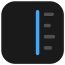
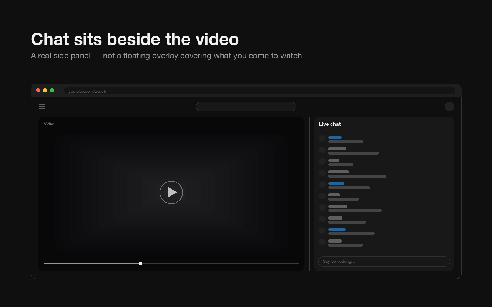
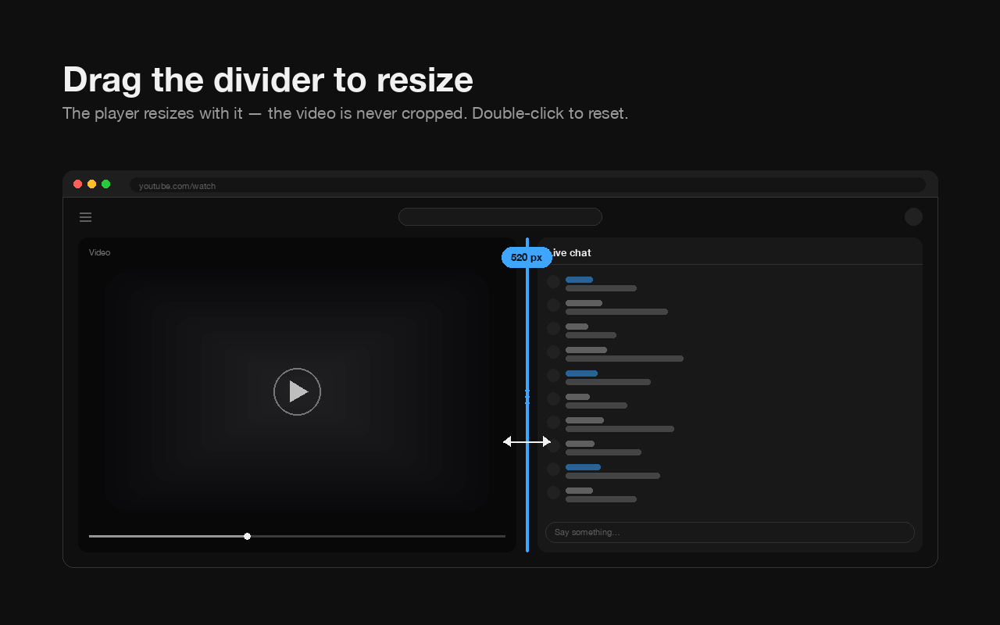
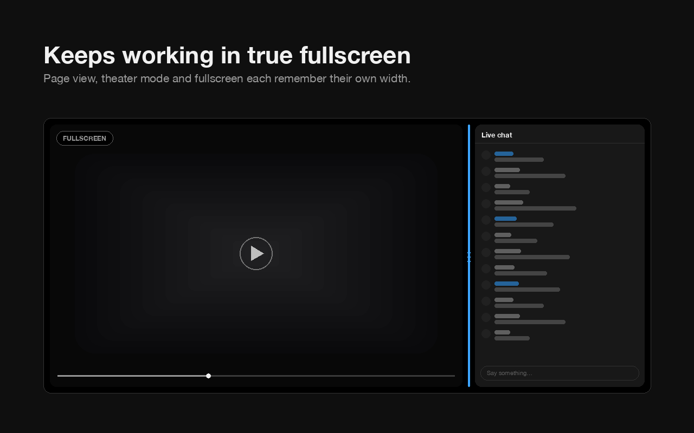
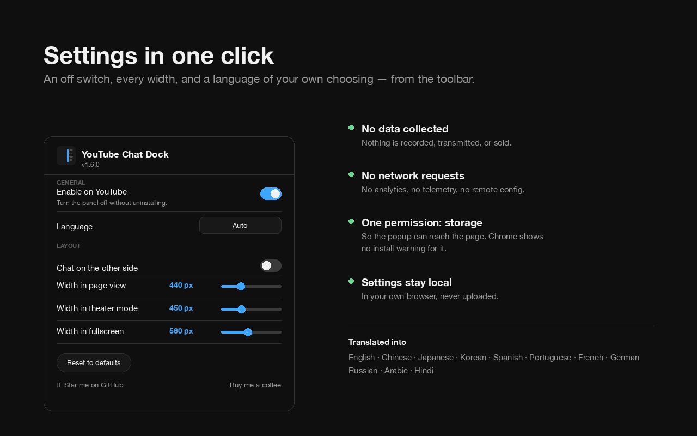

Live chat beside the video. Not on top of it.
A free, open-source Chrome extension that turns YouTube’s live chat and chat replay into a resizable side panel — in page view, theater mode and true fullscreen. The player is resized to fit beside the chat, so chat never covers the video and the video is never cropped.

Install a browser extension that docks it — YouTube itself has no setting for it. YouTube only offers chat as a fixed-width sidebar in page view, and it gives you nothing at all in fullscreen.
YouTube Chat Dock re-lays out the chat that is already on the page, so it stays YouTube’s own chat with YouTube’s own features — Super Chat, emotes, moderation tools, member badges. Nothing is re-implemented and nothing is proxied. What changes is where the chat sits and how wide it is.
Yes, by dragging the divider between the video and the chat. Page view, theater mode and fullscreen each remember their own width, so going fullscreen does not undo your layout.

Because YouTube narrows the player in theater mode to reserve a side slot, then leaves that slot empty and renders chat underneath the video instead. This is YouTube’s own behaviour, not a bug in any extension.
It was measured both with this extension enabled and disabled and the layout was identical: a roughly 450px column sits reserved and unused beside the player, and the chat is dropped below. YouTube Chat Dock fills that reserved slot with the chat it was reserved for, and lets you resize the reservation itself so the player and the chat stay in agreement.
Not on its own — YouTube hides chat entirely in true fullscreen. With this extension the chat stays docked beside the video in fullscreen, at its own remembered width, and the video is not cropped to make room.

Yes. Chat replay on a VOD is docked and resized exactly like live chat on an active stream, with no separate setting.
Yes. Hover the divider and click the ⇆ toggle, or flip the switch in the toolbar popup. The choice persists across videos and sessions.
In right-to-left interface languages such as Arabic, the toggle mirrors with the rest of the layout rather than inverting, so “the other side” always means what it looks like it means.
An on/off switch, a language picker, a side toggle, three width sliders and a reset — all in the toolbar popup. You never have to open it, though: the divider does everything the sliders do.
| Setting | What it does |
|---|---|
| Enable on YouTube | Turn the panel off without uninstalling |
| Language | Any of the 12, independently of your browser’s language |
| Chat on the other side | Same as the divider’s ⇆ toggle |
| Three width sliders | Page view, theater and fullscreen, previewing live as you drag |
| Reset to defaults | Puts everything back |

No. It collects nothing, transmits nothing, and makes no network requests of any kind — no analytics, no telemetry, no remote configuration. Your settings are stored in your own browser and never leave the device.
youtube.com and nowhere elsestorage, for which Chrome shows no install prompt
The single storage permission exists for exactly one reason: the
settings popup is a separate extension page and cannot otherwise reach the tab it
is configuring. Full policy:
store/PRIVACY.md.
The whole extension is one stylesheet and one small script, MIT licensed, and
readable end to end in about ten minutes.
Yes. It is a Manifest V3 extension with no dependencies, and it runs on Chrome 88 and up and on any Chromium-based browser — Edge, Brave, Opera, Vivaldi, Arc.
It is published on the Chrome Web Store, which Edge and the other Chromium browsers can install from directly. It is not a Firefox add-on.
Twelve: English, 繁體中文, 简体中文, 日本語, 한국어, Español, Português, Français, Deutsch, Русский, العربية and हिन्दी.
The picker is independent of the browser’s language, so Chrome can be in one language and the extension in another. Right-to-left layouts are handled properly rather than mirrored by accident.
Two worth knowing. Below a 1000px browser window it deliberately does nothing, and clearing site data for youtube.com resets your saved widths.
localStorage so they can be applied before the page paints,
which is what stops the layout flickering on every load.
Install it from the Chrome Web Store in one click, then reload any open YouTube tab. There is nothing to configure to get the side panel.
Add to Chrome, then reload your YouTube tab. Chrome asks you to approve nothing.
Clone the repo, open chrome://extensions/, turn on Developer mode, click Load unpacked and pick the folder. No build step, no dependencies.